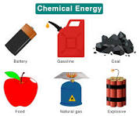
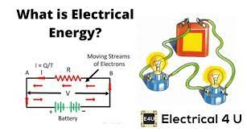
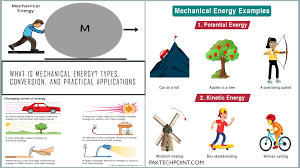
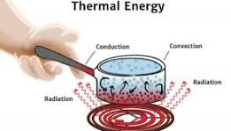

Energy, in physics, the capacity for doing work. It may exist in potential, kinetic, thermal, electrical, chemical, nuclear, or other various forms. There are, moreover, heat and work—i.e., energy in the process of transfer from one body to another. After it has been transferred, energy is always designated according to its nature. Hence, heat transferred may become thermal energy, while work done may manifest itself in the form of mechanical energy.
light energy, heat energy, mechanical energy, gravitational energy, electrical energy, sound energy, chemical energy, nuclear or atomic energy ,etc.
Chemical energy is energy stored in the bonds of chemical compounds (atoms and molecules). Chemical energy is released in a chemical reaction, often in the form of heat.
For example, we use the chemical energy in fuels like wood, coal by burning them.
Electrical energy is the energy carried by moving electrons in an electric conductor. It is one of the most common and useful forms of energy. Example – Lightning. Other forms of energy are also converted to electrical energy.
For example, power plants convert chemical energy stored in fuels like coal into electricity through various changes in its form.
Mechanical energy is the energy a substance or system has because of its motion.
For example machines use mechanical energy to do work.
Thermal energy is the energy a substance or system has related to its temperature,i.e., the energy of moving or vibrating molecules.
For example, we use the solar radiation to cook food.